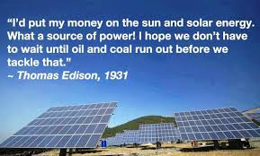
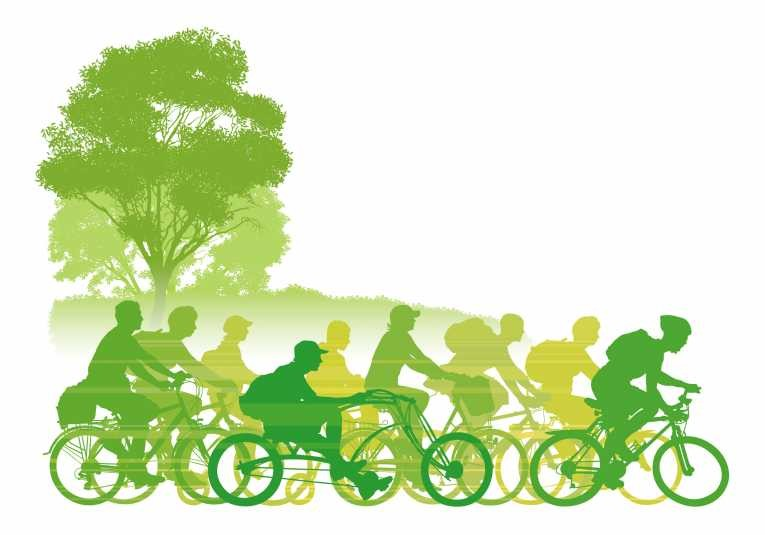
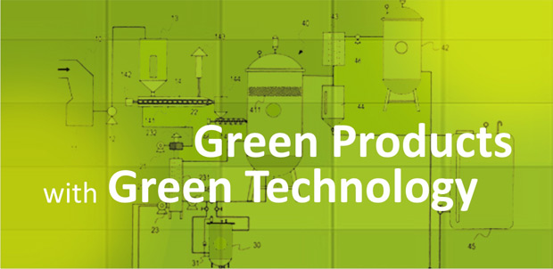
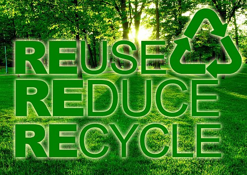
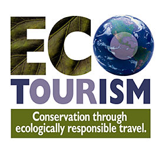
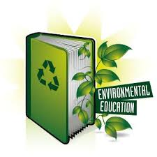

Alternative sources of energy
Burning fossil fuels to produce energy causes a lot of pollution. Renewable sources of energy such as wind power, wave power and solar power are much cleaner. People can also easily reduce the amount of energy they use. A lot of electricity is wasted by leaving on lights, televisions, and other electrical equipment when they are not being used.
The use of solar power in the home is becoming an attractive proposition for a growing number of people. In fact, many people use solar power by harnessing the sun's energy to heat their homes and to run different appliances. It is an economical and earth-friendly way to bring power into the home. In addition, solar power is also used to generate hot water.
The most basic technology used in solar power is the solar electric panel. These panels use photons in order to generate electricity. These photovoltaic (PV) panels can be free standing rigid sheets used to harness the sun's energy. They can also be set into the roof, or you can get peel and stick laminates, depending on your roof type. Obviously, such solution is far from expensive and easy to do but its advantages are undeniable.
Environmentally-friendly forms of transport
 If more people used public transport, this would reduce the amount of pollution. Public transport is much more environmentally-friendly, because buses and trains can carry large numbers of people at same time, whereas cars often carry only one person. Car pools are another way of reducing the number of cars on our roads. The big car companies are also working on developing new engine technology, so that cars can run on cleaner fuels such as hydrogen instead of petrol. For shorter journeys cycling is a much healthier alternative to driving a car, and many towns have introduce special cycle lanes.
Green products
 Choosing to buy green products also help the environment, for example organic foods that are produced without using pesticides. Not only are pesticides detrimental for the environment, the chemicals in them can also be harmful to humans. Practically, each household can make their own small garden for growing organic vegetables. There are numerous kinds of vegetable which are easy to grow for short-term, especially good for people’s health and environment.
If we buy wood from sustainable sources, this will mean that our forests can be maintained for future generations. We can also use other materials such as bamboo instead of wood to make stuff.
Say no with plastic bag! We can use green bags such as paper bag to put things in. Clearly, when people go to the market to buy things, they always take one plastic bag for one thing. It’s unnecessary and very damaging to environment. Thus, using reuseable shopping bags such as canvas fabric bag would reduce the number of plastic bags dumped into environment.
So much of modern life is based around shopping and buying new things. Everything is out-of-date in only a few years or even months. If we stopped buying and throwing away so many things, this would help ease the pressure on the environment.
Recycling waste
 Although we try to reduce the amount of wastes, it’s undeniable that there are still a large number of wastes dumped into environment everyday. Hence, recycling waste appears to be the best solution for remained wastes. There are some actions that each household can do to protect and save environment. They are 3R: reduce-reuse-recycle. While we collect our wastes, we should separate them into different boxes for plastic, metal, glass, organic waste, ect…Nowadays, most kind of wastes can recycle to make new things. Each kind of waste has its own recycling process. If all wastes are recycled, there will be a significant decrease in the number of wastes.
Nevertheless, the fact in some developing and poor countries is that the regular collection service and the consciousness of community are very poor. Moreover, the number of the unemployed is getting higher and higher. Why don’t they create their own job from waste? They can collect household wastes from their house and other houses and then separate. They can sell separated wastes for recycling factories. The salary depends on the amount of wastes they have. The more money they want to earn, the more wastes they have to collect and separate.
Eco-tourism
 According to the development of economy, people today tend to take vacation to hot spot in the world for traveling and relaxing. However, most of them choose favorite places with resorts, spas and other modern entertainment. Obviously, the environment of such places will get worse as the great pressure of the large number of travelers. Thus, eco-tourism seems to be the effective way to protect environment but interesting.
Ecotourism is travel to fragile, pristine, and usually protected areas that strives to be lowimpact and often small scale. It helps educate the traveler; provides funds for conservation; directly benefits the economic development and political empowerment of local communities; and fosters respect for different cultures and for human rights. Responsible ecotourism includes programs that minimize the negative aspects of conventional tourism on the environment and enhance the cultural integrity of localpeople. Therefore, in addition to evaluating environmental and cultural factors, an integral part of ecotourism is the promotion of recycling, energy efficiency, water conservation and creation of economic opportunities for the local communities. Another interesting idea is that tourists can home stay with local people instead of booking five stars hotel with modern conditions. They also can study how local people work such as planting rice, catch-fishing, etc
Green Education
 No matter how many solutions we have, it would be nothing if people can’t recognize the vital role of environment. People should be aware of environmental alarm and take more responsibilities for environment crisis. Accordingly, education is the best solution. Green education is to assist individuals or social groups to become aware, and sensible, to the environment and its problems as a whole, to increase a diversity of experiences, and to obtain a basic comprehension of the environment and its related problems.